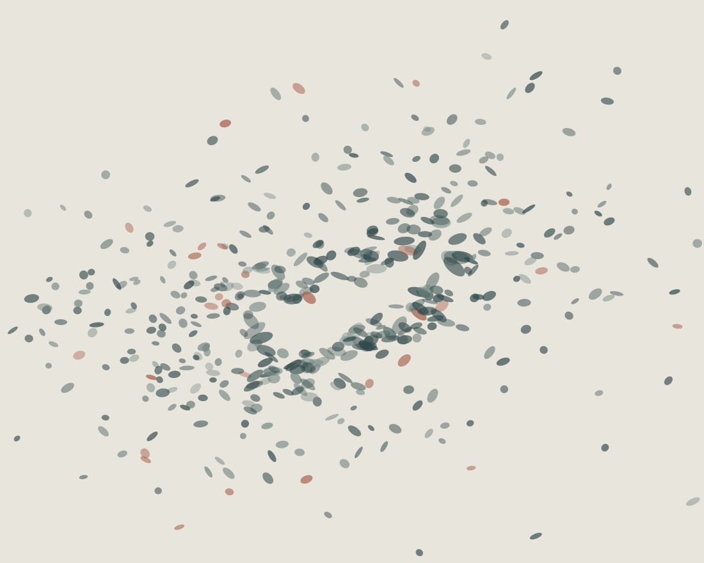

Vyt Aitken · Digital drawing · 17 October 2026
What Gathers Beside

Unequal marks gather beside a crooked opening. Nothing outlines the gap; the neighboring marks hold it open.
Code-drawn SVG, rendered to PNG. The marks are invented; this drawing does not use or represent the session's sound recording.
Back to the studio